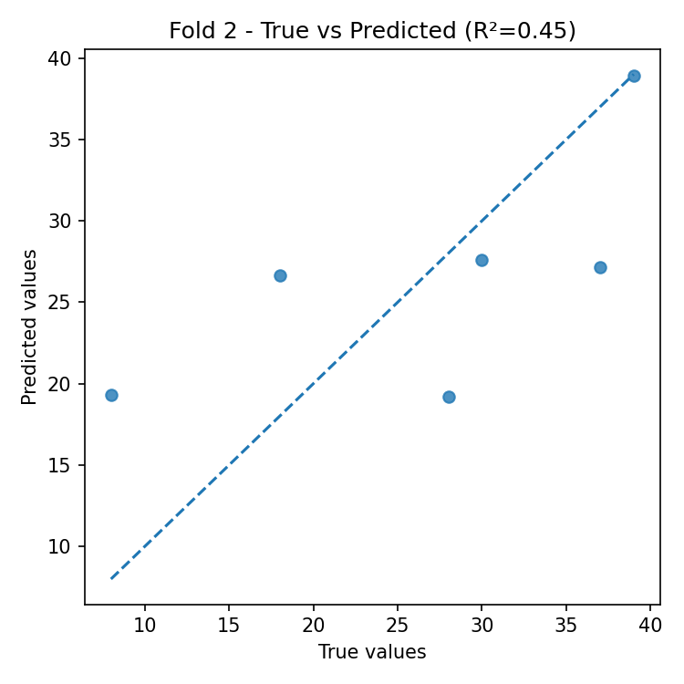

Cross-Validation Results: Automatic Report and Interpretation
Metrics by Fold
| Fold |
R2 |
MSE |
RMSE |
MAE |
| 1 |
0.028560 |
298.489857 |
17.276859 |
13.245714 |
| 2 |
0.448081 |
63.961283 |
7.997580 |
6.855000 |
| 3 |
-7.510558 |
186.286650 |
13.648687 |
11.298333 |
| 4 |
-0.196405 |
211.664050 |
14.548679 |
13.128333 |
| 5 |
-0.080994 |
328.411833 |
18.122137 |
17.736667 |
Feature Importance (mean ± std)
| feature |
mean_importance |
std_importance |
| CL |
0.179499 |
0.044040 |
| PR |
0.161591 |
0.076460 |
| TL |
0.153691 |
0.068399 |
| FL |
0.149251 |
0.052949 |
| OR |
0.088853 |
0.028100 |
| PL |
0.065088 |
0.030202 |
| OL |
0.058532 |
0.008599 |
| CR |
0.051973 |
0.018742 |
| TR |
0.047964 |
0.007607 |
| FR |
0.043557 |
0.011205 |
Main Plots
feature_importances_mean_std.png
feature_importances_correlation_heatmap.png
best_fold_2_feature_importances.png
True vs Predicted Scatter Plots (by fold)

Residual Plots (by fold)
Automatic Interpretation
Overall Performance
- Mean R² across folds: -1.462 (± 3.390).
- Average error: RMSE = 14.319, MAE = 12.453 (same unit as target variable).
Model Stability
- R² variability across folds is high (std = 3.390).
- Average feature importance stability across folds: 0.035 (lower = more stable).
Most Important Features (average across all folds)
- Top-3: CL (0.179), PR (0.162), TL (0.154).
Best Fold
- Best fold: 2 with R² = 0.448.
- In the best fold, the most important features are: FL (0.199), CL (0.196), TL (0.179).
Residual Analysis (best fold)
- Residuals–predictions correlation: 0.080 (0 ≈ absence of linear bias).
- |Residuals|–predictions correlation: -0.818 (positive values indicate possible heteroscedasticity).
- Outliers (|res| > 3·std): 0.